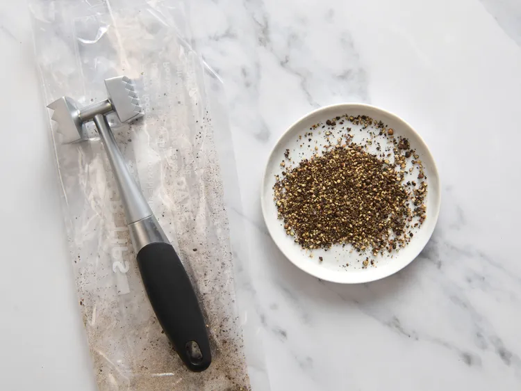
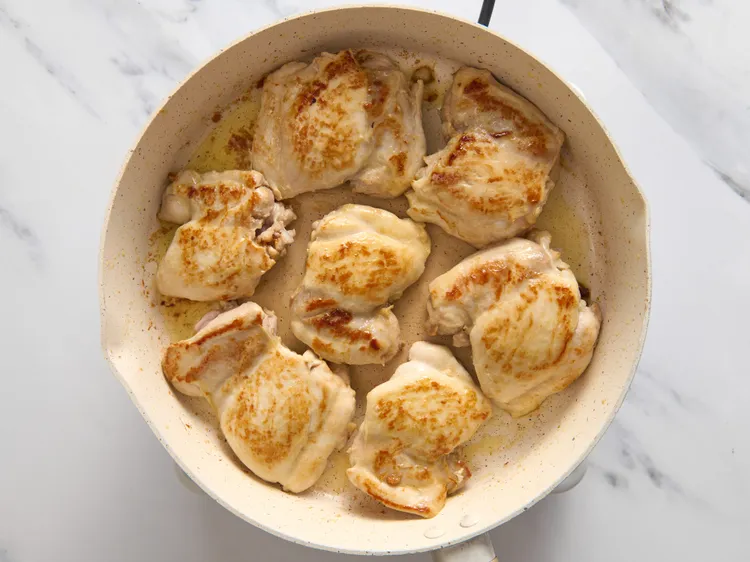
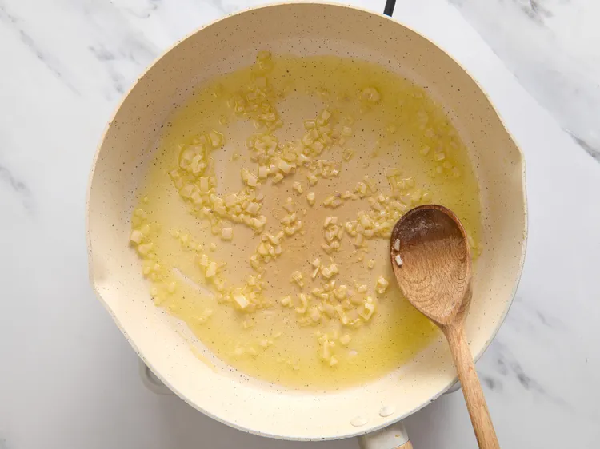
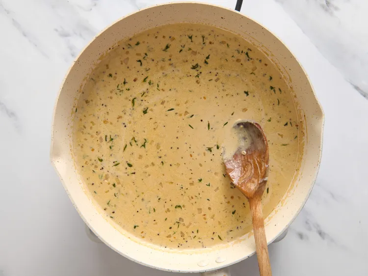
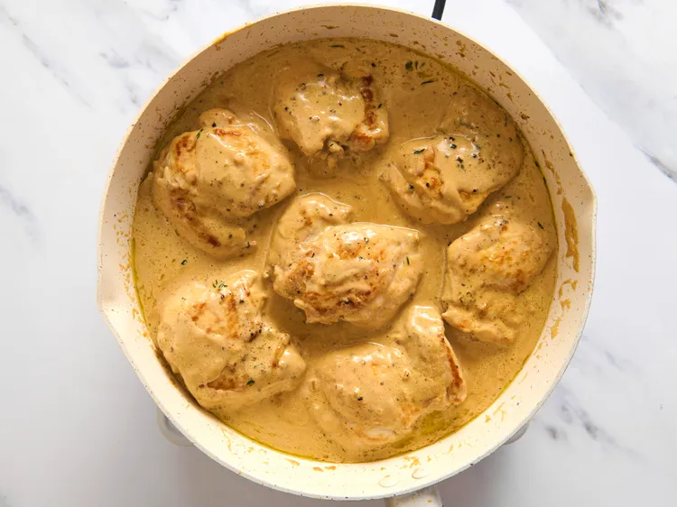
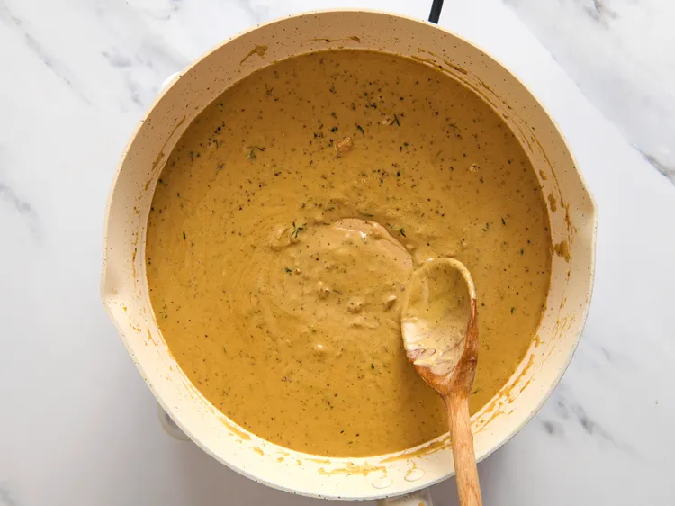
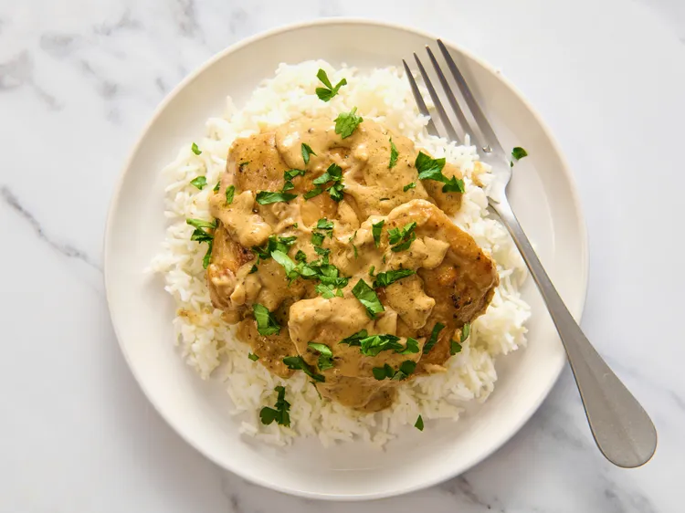

Chicken au Poivre

Discription
A simple and delicious Chicken au Poivre recipe
Ingridiens
- 1 tablespoon black peppercorns
- 1 tablespoon olive oil
- 3 tablespoons unsalted butter, divided
- 2 pounds skinless, boneless chicken thighs, patted try
- 1/2 teaspoon salt, or to taste
- 2 tablespoons minced shallot
- 1 cup low-sodium chicken broth
- 1/2 cup heavy cream
- 3 or 4 fresh thyme sprigs
- 1 tablespoon freshly squeezed lemon juice
- fresh parsley sprigs for garnish (optional)
Steps
-
Add peppercorns to a zippered food storage bag and seal. Lightly pound
with a meat mallet or skillet until peppercorns are broken and cracked.
Set aside.

-
Add olive oil and 1 tablespoon butter to a 12-inch nonstick skillet set
over medium heat. Heat until the butter is melted and no longer
bubbling. Swirl the pan to combine oil and butter.
-
Season the chicken with salt and add to the skillet. Cook chicken on
both sides until lightly browned, about 3 to 4 minutes per side. Remove
to a plate and keep warm.

-
Clean skillet with paper towels, return to the burner, and add remaining
butter and shallot. Cook, stirring, until butter melts and shallot is
softened, about 1 minute.

-
Stir in broth, heavy cream, thyme, and cracked peppercorns. Cook,
stirring, and bring to a boil. Make sure to stir up any browned bits
into the sauce from the bottom of the pan.

-
Add chicken and any juices from the plate. Return to a boil, then reduce
to a simmer. Cook until chicken is no longer pink at the center and
juices run clear, 8 to 10 minutes. An instant read thermometer inserted
into the thickest part should read 165 degrees F (74 degrees C).

-
Plate chicken on top of rice, on 4 plates. Turn the heat back to medium
and cook until sauce thickens and darkens a bit, 3 to 5 minutes.

-
Adjust salt and spoon sauce over chicken. Garnish with parsley.

Home